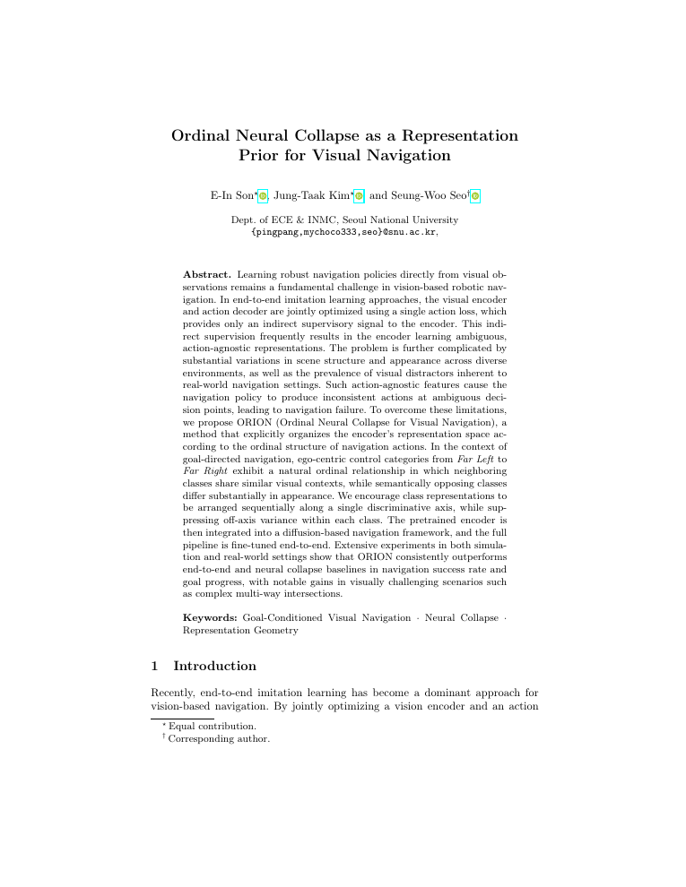
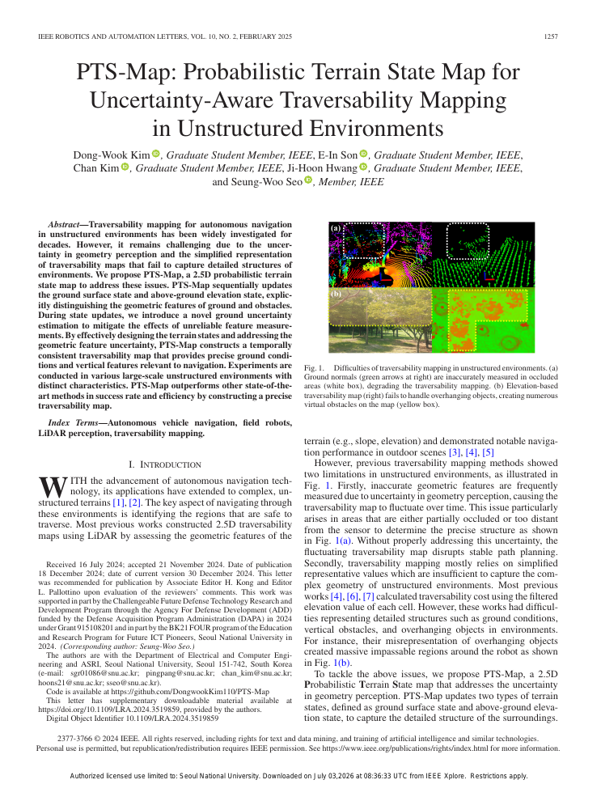
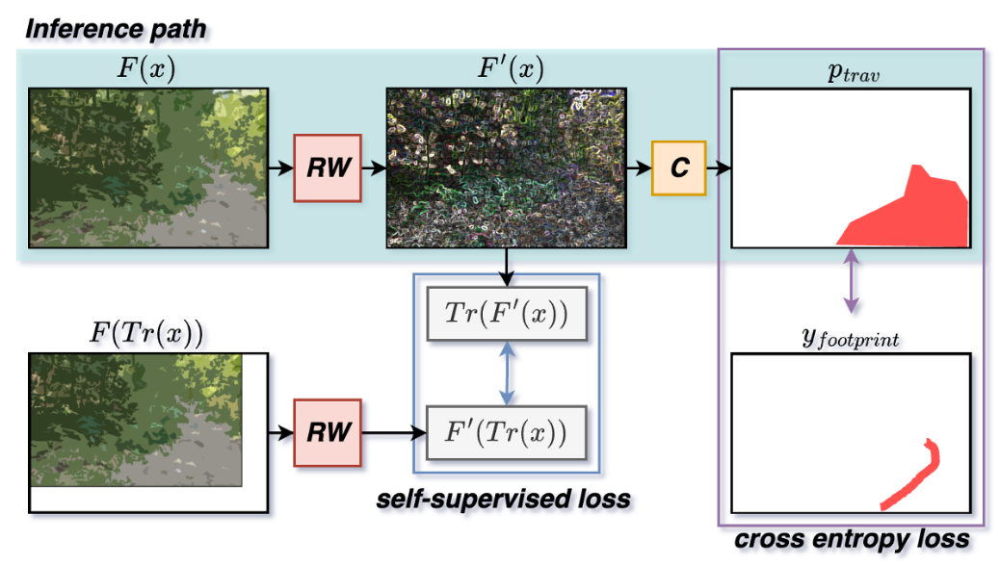
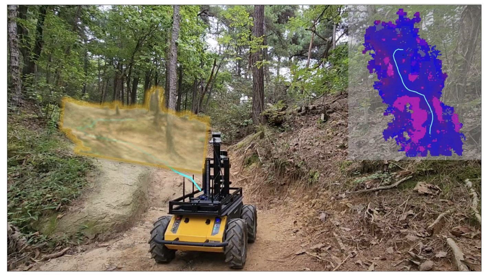
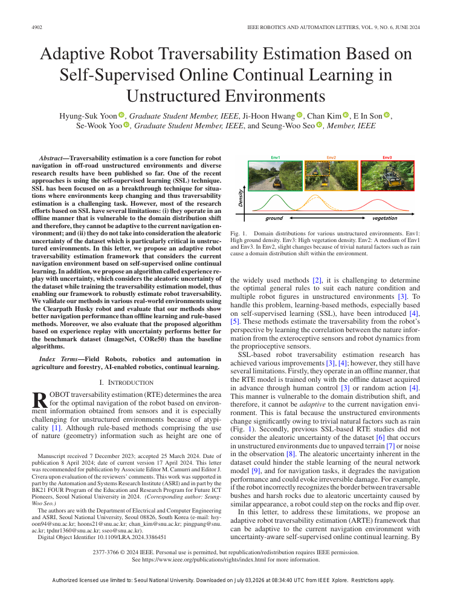

Ph.D. Candidate — Vehicle Intelligence Lab
Seoul National University · Advisor: Prof. Seung-Woo Seo
Mar 2021 – Present
I am a Ph.D. candidate in the Department of Electrical & Computer Engineering at Seoul National University, where I work in the Vehicle Intelligence Laboratory under the supervision of Prof. Seung-Woo Seo.
My research centers on autonomous navigation for mobile robots in unstructured, off-road environments. I am particularly interested in learning-based perception and decision making — including imitation and reinforcement learning, visual navigation, and traversability estimation — that lets robots perceive and traverse complex real-world terrain reliably.
I received my B.S. in Electrical & Electronics Engineering from Konkuk University (2021, Summa Cum Laude). Recently, our team won 1st place in the inaugural Earth Rovers Challenge at IROS 2024.
Bold = me · * equal contribution

Ordinal Neural Collapse as a Representation Prior for Visual Navigation ECCV 2026
European Conference on Computer Vision (ECCV), 2026 Co-first author

PTS-Map: Probabilistic Terrain State Map for Uncertainty-Aware Traversability Mapping in Unstructured Environments RA-L 2025
IEEE Robotics and Automation Letters (RA-L), 2025

Follow the Footprints: Self-supervised Traversability Estimation for Off-road Vehicle Navigation based on Geometric and Visual Cues ICRA 2024
IEEE International Conference on Robotics and Automation (ICRA), 2024

Traversability-aware Adaptive Optimization for Path Planning and Control in Mountainous Terrain RA-L 2024
IEEE Robotics and Automation Letters (RA-L), 2024 Co-first author

Adaptive Robot Traversability Estimation Based on Self-Supervised Online Continual Learning in Unstructured Environments RA-L 2024
IEEE Robotics and Automation Letters (RA-L), 2024
Won 1st place as a member of Seoul National University's Vehicle Intelligence Laboratory in the inaugural Earth Rovers Challenge — remote mobile-robot navigation across diverse structured and unstructured environments in multiple countries.